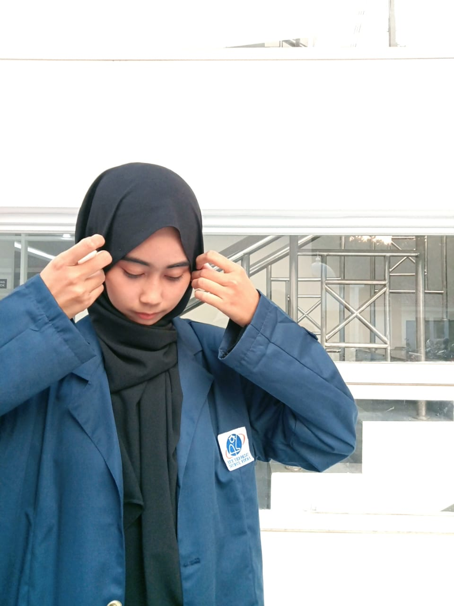

<html>
<head>
    <title>Layout Flexbox</title>
    <link rel="stylesheet" href="flexbox.css">
    <link rel="stylesheet" href="frame.css">
</head>
</html>
<body>
    <div class="container">
        <header id="header"><frameset rows="25%,5%,*,5%" cols="100%">
            
        </header>
        <nav id="menu"><center>
            <a href="https://www.instagram.com/cateuperson/profilecard/?igsh=MTVvaGs5MmtmYmVqOQ==" target="_blank">Instagram</a>
            <a href="video.html" target="content">Youtube</a>
            <a href="https://wa.me/qr/BK5MDJP4LS4HI1" target="_blank">WhatsApp</a>
        </center></nav>
        <!-- nyatuin sidebar dan main -->
    <div class="content">
        <aside id="sidebar">
            <fieldset>
                 <legend>Link</legend>
                <ul>
                    <li><a href="http://nurulfikri.ac.id/" target="_blank">STT-NF</a></li>
                    <li><a href="http://nfacademy.id/" target="_blank">NF Academy</a></li>
                </ul>
            </fieldset>
        </aside>
        <main id="main">
            <h1>
                <marquee direction="right" scrolldelay="100">Welcome to Nwj'<sup>s</sup>SITE</marquee>
            </h1>
            <hr/>

            <p align="justify">
            

                Dengan menyebut nama Allah yang maha pengasih lagi maha penyayang. Yang
                kasih dan sayangnya tidaklah pernah berbilang. Yang kasih dan sayang-Nya
                tak pernah usang, meskipun dunia ini sudah menghilang. Begitu besar kasih
                sayang-Nya Allah kepada makhluknya, yang sepatutnyalah kita
                mensyukurinya atas segala karunia yang diberikan-Nya. Berbahagialah
                orang yang bisa mengaplikasikan syukur dalam hidup dan kehidupan ini.
                Karena hakikat dari Syukur bukanlah sekedar diucapkan oleh lisan, tapi
                bagimana syukur itu bisa diaplikasikan dalam kehidupan.</p>

                <p align="justify">
                Sholawat serta salam tak lupa selalu kita panjatkan kepada junjungan kita
                Muhammad SAW. Yang telah Allah turunkan kepada kita semua untuk kita
                jadikan suri tauladan. Dan maha kasihnya Allah menurunkan Rosul
                terakhirnya dari golongan manusia. Bagaimana kalau Allah menurunkan Rosul
                terakhirnya dari golongan Malaikat atau Jin, sudah barang tentu kita
                tidakkan mampu untuk mencontoh perilaku beliau.</p>

               <p align="justify">
                Selamat mengunjungi web yang sangat sederhana ini, Selamat mengunjungi,
                kritik dan saran yang membangun sangat diharapkan demi lebih baiknya lagi
                tampilan web ini,semoga bermanfaat untuk teman-teman sekalian.
                </p>
                <br/>
                <fieldset>
                    <legend>About Me</legend>
                    <ol type="A">
                        <li>Pendidikan
                            <ul type="disc">
                                <li>SDN 05 Jagakarsa</li>
                                <li>SMP-IT AL-Husna Cikampek</li>
                                <li>PKBM Citra Pakuan Bogor</li>
                                <li>STT TEKNOLOGI NF Depok</li>
                            </ul>
                        </li>
                        <li>Hobby</li>
                            <ul type="square">
                                <li>Masak</li>
                                <li>Nonton Drakor</li>
                                <li>Main bareng Kucing</li>
                            </ul>
                        <li>Favorite Menu
                            <ol type="I">
                                <li>ayam goreng</li>
                                <li>ikan bakar</li>
                                <li>ayam geprek</li>
                             </ul>
                        <li>Minuman
                            <ol type="a">
                                <li>Es kopi</li>
                                <li>Jus Mangga</li>
                                <li>Es serut</li>
                            </ol>
                        </li>
                            </ol>
                        </li>
                    </ol>
                </fieldset>
            </main>
         </div>
         <footer id="footer"><center>
            Design By: NjwL@2024 &copy; STT-NF
         </center></footer>
    </div>
</body>
</frameset>